4 个 2050 目标 + 23 个 2030 目标
个人简介 Profile
我的工作主要回答一个核心问题：在土地利用变化与极端气候共同作用下，生物多样性会如何重组， 哪些区域和类群最需要优先保护。研究方法涵盖宏生态统计建模、系统保护规划与多源数据整合， 目标是把“全球尺度规律”转化为“区域尺度可执行策略”。

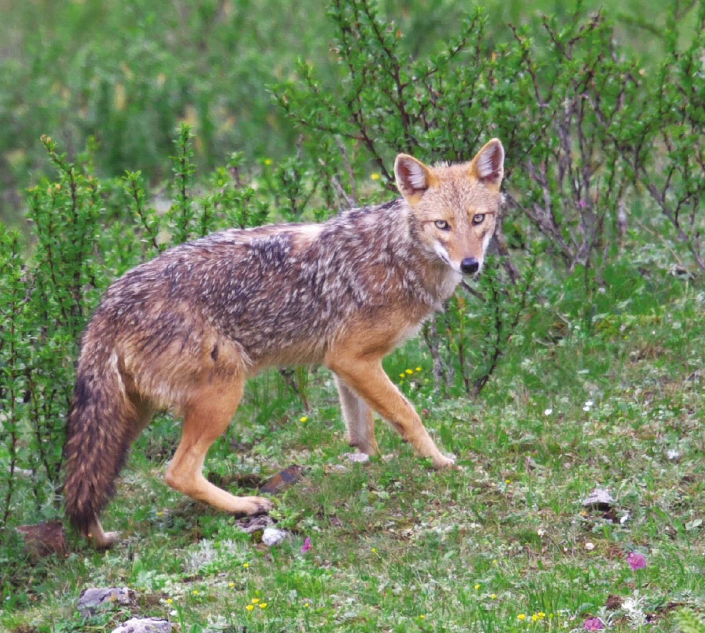
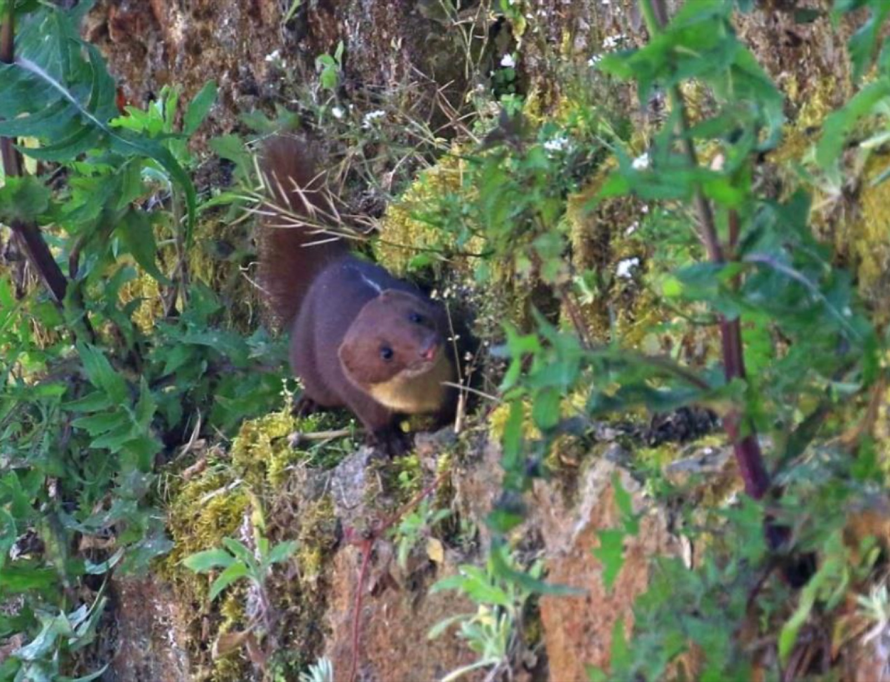
研究经历 MSc - PhD - Postdoc
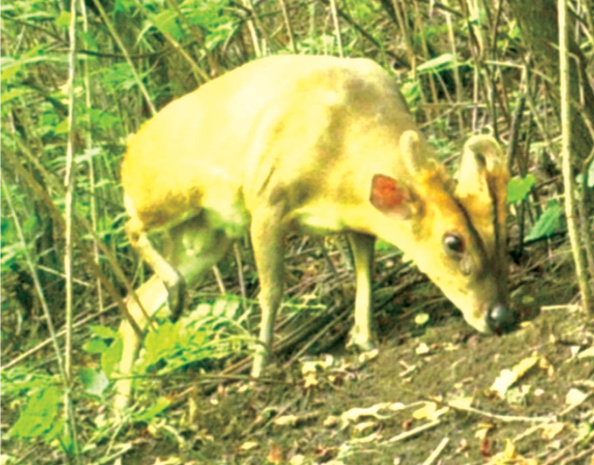
硕士阶段（2016-2019）
中国科学院动物研究所
以物种分布与栖息地适宜性为主线，建立野外调查与数据分析的基础能力。

博士阶段（2020-2024）
北京师范大学（含 UCL 联培）
聚焦中国陆栖哺乳动物新纪录时空格局，推进跨尺度生物地理与保护评估。

博士后阶段（2024-至今）
北京大学 & IIASA
连接全球变化风险与政策实施场景，推动模型结果向保护优先行动转化。
全球框架与研究背景 Policy Context
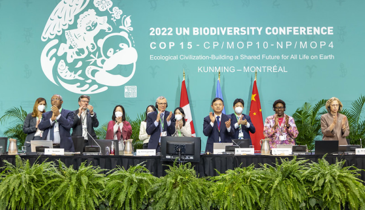
昆蒙框架（KMGBF）
COP15 通过，明确 2050 愿景，并提出 4 个长期目标与 23 个 2030 行动目标。
查看官方页面
可持续发展目标（SDGs）
2015 年启动的 2030 议程，以 17 个目标、169 个细化目标构建全球行动框架。
查看官方页面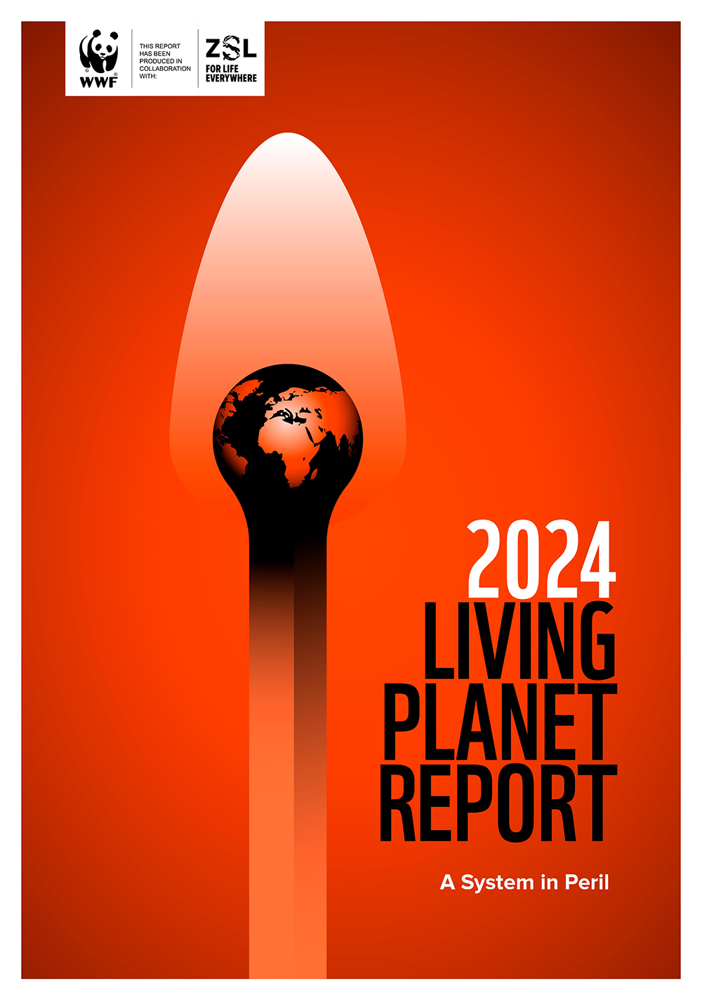
LPI / Living Planet Report
LPR 2024 强调监测脊椎动物种群持续下降，LPI 已被 CBD 用于评估框架进展。
查看 LPI 平台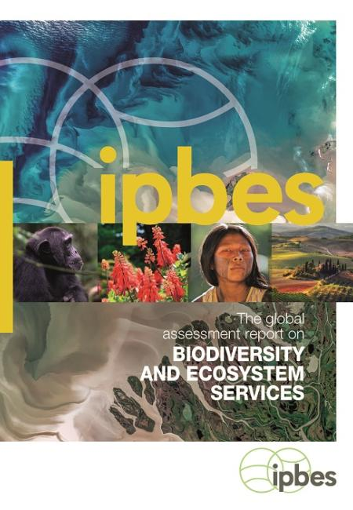
IPBES 全球评估
指出自然退化速度前所未有，并给出“约 100 万物种受威胁”的关键警示。
查看官方发布IPCC AR6 综合报告
确认气候变化已造成自然系统广泛影响，强调减缓与适应协同的紧迫性。
查看摘要结论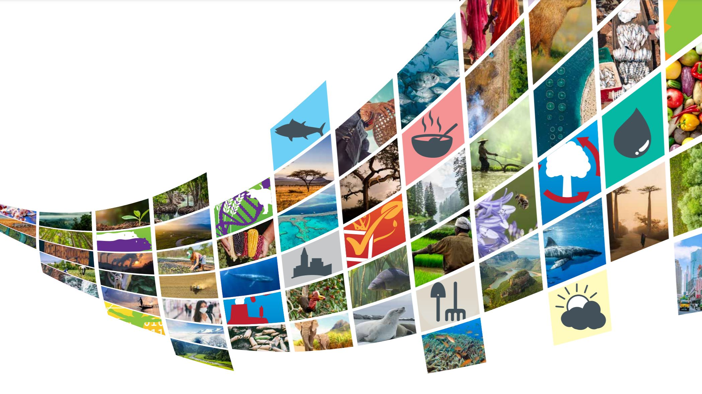
全球生物多样性展望（GBO-5）
系统回顾 2011-2020 进展，并提示“全球层面爱知 20 目标未完全达成”。
查看官方页面研究方向 Research Focus
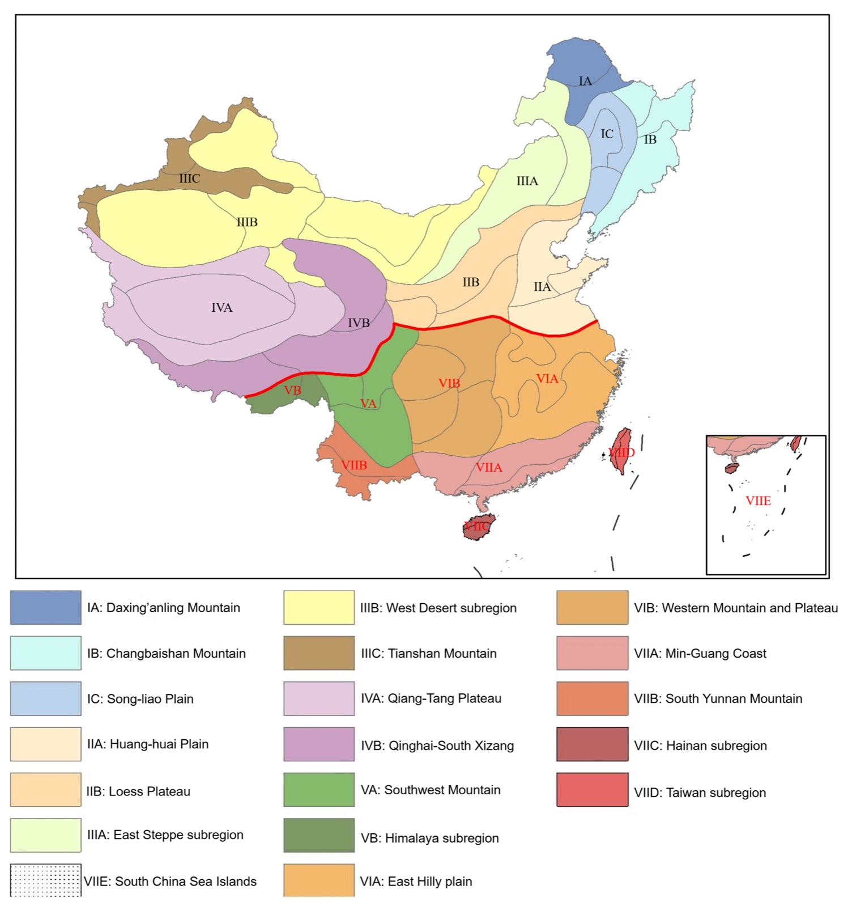
宏观生物地理格局
面向中国及全球尺度，解析物种新分布记录、区系边界和生态驱动机制。
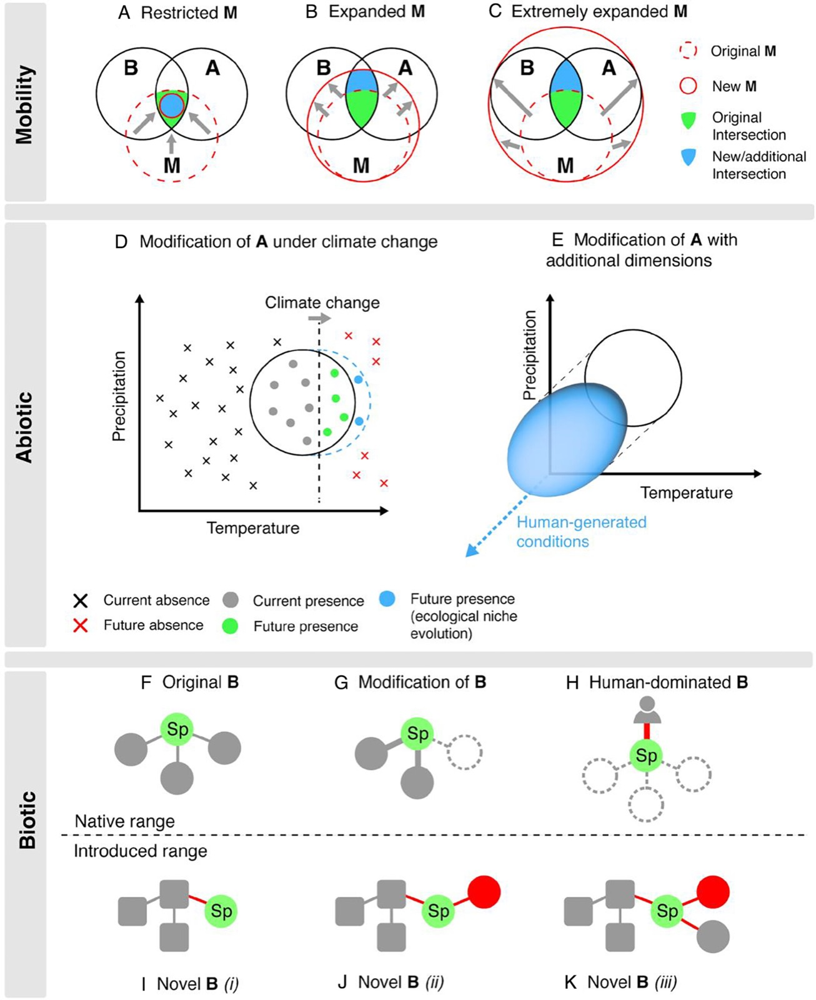
全球变化响应机制
整合气候变化、土地利用与生物互作维度，识别“风险叠加”与“缓冲机制”。
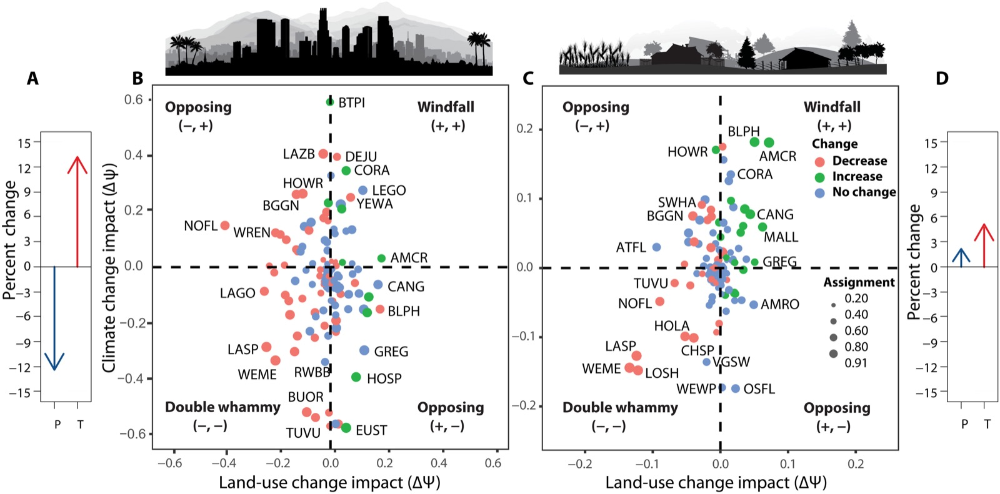
保护策略与优先区
将模型输出转化为可执行保护清单，服务濒危类群保护和政策落地评估。
研究图谱 Visual Atlas


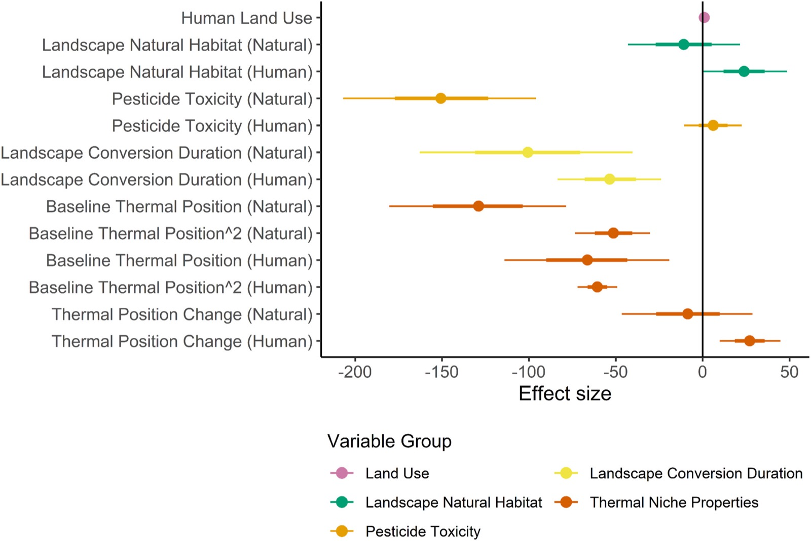
代表作（含 DOI） Selected Publications
-
Ding, C. et al. (2025). Taxonomic and Spatiotemporal Patterns and Ecological Correlates of New Mammal Distribution Records in China. Global Ecology and Biogeography.
贡献：揭示新纪录发现的时空格局与生态关联，服务保护优先区识别。
DOI: 10.1111/geb.70165 -
Ding, C., Newbold, T., & Ameca, E. I. (2024). Assessing the global vulnerability of dryland birds to heatwaves. Global Change Biology.
贡献：从全球尺度识别热浪高风险鸟类与关键脆弱区域。
DOI: 10.1111/gcb.17136 -
Ding, C. et al. (2022). Probable extirpation of the hog deer from China: implications for conservation. Oryx.
贡献：提出区域性灭绝预警并给出跨境协同保护建议。
DOI: 10.1017/S0030605321000016 -
Ding, C. et al. (2022). A dataset on the morphological, life-history and ecological traits of the mammals in China. Biodiversity Science.
贡献：构建中国哺乳动物功能性状数据库，支撑宏生态与保护分析。
DOI: 10.17520/biods.2021520
项目与荣誉 Projects & Awards
科研项目
北京市自然科学基金青年项目（主持）
2026-2028
围绕全球变化胁迫与生物多样性响应机制，开展跨尺度风险评估与政策关联研究。
代表荣誉
- 北京师范大学学术创新奖（2024-2025）
- 北京师范大学博士生一等奖学金（2020-2021）
- 中国科学院大学优秀毕业生（2017-2018）
- 海南大学国家奖学金（2014-2015）
专业技能 Skills
R
Python
Statistics & Visualization
Species Distribution Models
Systematic Conservation Planning
Marxan
Macroecological Modelling
Policy-Relevant Biodiversity Assessment
数据与背景来源
KMGBF（CBD）、SDGs（UN）、LPI/LPR（WWF-ZSL）、IPBES Global Assessment、IPCC AR6 Synthesis、GBO-5。